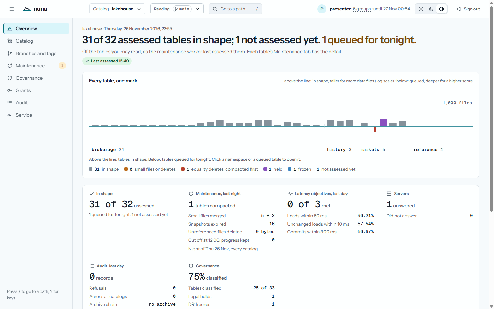

The Overview page
The Overview answers, for anyone who reads data in a catalog, whether its tables are in shape, what is queued for tonight's maintenance and what last night's did, with the last day's service, audit and governance figures for those who may see them.

Who sees it
The rail shows Overview when your groups may read data (select) somewhere in the catalog. Every figure about tables counts only the tables you may read. The panels for latency and servers appear only to platform operators, the audit figures only to those who read the audit feed, and the governance figures to anyone who may see the catalog's governance summary. A panel the server refuses is left out.
The head
The eyebrow names the catalog and the date and time. The title says how the catalog stands, in one of these forms:
- Nothing in catalog you may read., with a link to another catalog where you may (other has N tables →).
- The setup words when the maintenance worker cannot yet maintain the catalog, such as The worker can't maintain catalog yet: N of 4 steps left. The Maintenance page lists the steps.
- Maintenance is off in catalog's policy: nothing will be compacted or expired.
- How many tables are in shape, such as x of N tables in shape. or x of N assessed tables in shape; M not assessed yet., followed by N queued for tonight. or Nothing queued for tonight.
The line beneath reads "Of the tables you may read, as the maintenance worker last assessed them. Each table's Maintenance tab has the detail." A pill gives Last assessed HH:MM.
Every table, one mark
One mark for each table you may read. Above the line are the tables in shape, taller for more data files on a log scale, with a reference line at 1,000 files. Below are the tables queued for tonight, deeper for a higher score. The legend's colours are in shape, small files or deletes, equality deletes, compacted first, fixed last night, held and frozen, with N not assessed yet. Select a namespace or a queued table to open it.
The figures
- In shape
- x of assessed tables, and how many are queued for tonight and not assessed yet. With none assessed it shows – and none assessed yet, saying why: maintenance is off in the catalog's policy or the maintenance worker has not reported.
- Maintenance, last night
- How many tables were compacted, then Small files merged (before and after), Snapshots expired, Unreferenced files deleted and, if the night ran out, Cut off at HH:MM, progress kept. These are the whole deployment's figures, every catalog. With no night: "The worker has reported no job in the last 30 nights."
- Latency objectives, last day
- Platform operators only. met of judged objectives met: Loads within N ms, Unchanged loads within N ms and Commits within N ms. With no traffic: no requests in the last day.
- Servers
- Platform operators only. How many servers answered, and any that Did not answer.
- Audit, last day
- For those who read the audit feed: the number of records, the Refusals, the count Across all catalogs, and the Archive chain: no archive, intact at HH:MM, broken or not checked yet.
- Governance
- The share of tables classified, with Tables classified, Legal holds, DR freezes and Closed until classified.
Queued for tonight
The first eight tables of tonight's queue, neediest first, as the worker will start them, with Table, Why and Score. A longer queue ends with N more in the queue. and Open the maintenance queue. The reasons are:
- Equality deletes: every reader must join against them; such a table is compacted first.
- Small files: a partition holds enough small data files to rewrite them into fewer, larger ones.
- Deletes: more delete files than its policy allows for its data files; every read has to apply them.
When the queue is empty, the panel says why:
- The setup steps left, with What the worker needs to maintain catalog →.
- Nothing queued: maintenance is off in catalog's policy., with Edit the catalog's policy if you may modify the catalog.
- Nothing queued: the maintenance worker has not assessed any table you may read yet.
- No assessed table you may read needs compaction; N not assessed yet.
- No table you may read needs compaction.
Last night
A chart of last night's jobs: one lane per compaction slot (Slot N) and one for Orphans, from the opening of the cleanup window. A night is one opening of the cleanup window and the day after it. "Dashed line: the end of the cleanup window. A job cut off there keeps the work it finished. Jobs on tables you may not read are drawn without a name." Beneath are Compaction jobs finished, Cut off at HH:MM, Failed and Still running. With no job: "No compaction or orphan scan ran that night. Work done at other hours is counted below."
From the command line
| On the page | Endpoint |
|---|---|
| Every table, one mark; In shape | GET /management/v1/maintenance/estate (Maintenance) |
| Queued for tonight | GET /management/v1/maintenance/tables (Maintenance) |
| Last night; Maintenance, last night | GET /management/v1/maintenance/nights?days=30&jobs=1 (Maintenance) |
| The setup steps | GET /management/v1/catalogs/{catalog}/maintenance/readiness (Maintenance) |
| Latency objectives; Servers | GET /management/v1/health/catalog (Health) |
| Audit, last day | GET /management/v1/catalogs/{catalog}/audit/summary, GET /management/v1/audit/archive (Audit) |
| Governance | GET /management/v1/catalogs/{catalog}/governance/summary (Governance) |
See also
- The Maintenance page: the whole queue, the nights and the policy.
- Maintenance: scans, the health score and the cleanup window.
- Maintenance nights: reading a night's figures.
- The Service page: the full latency and server figures.
How this page was checked
Written from the console's overview.js, nights.js and queue.js, checked against commit b3e8582f on 2026-11-26.
The console was not driven in a browser. The queue was read from the running demo with GET /management/v1/maintenance/tables.